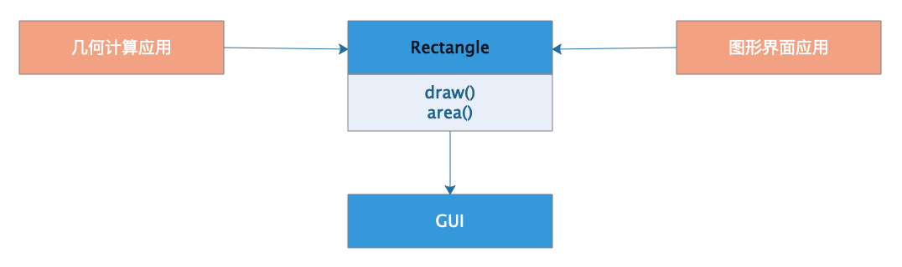
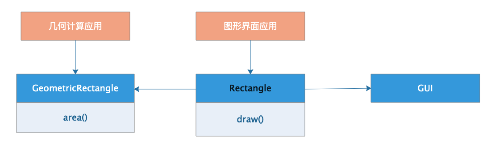
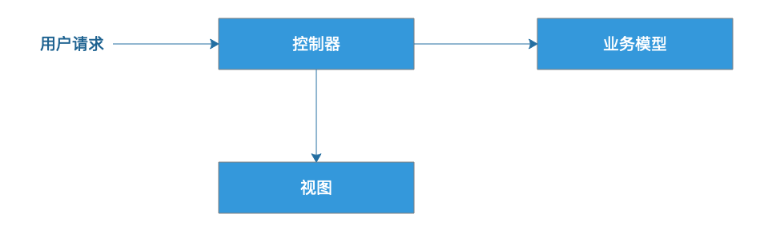
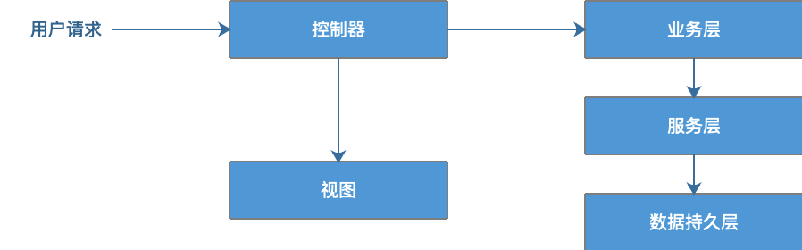
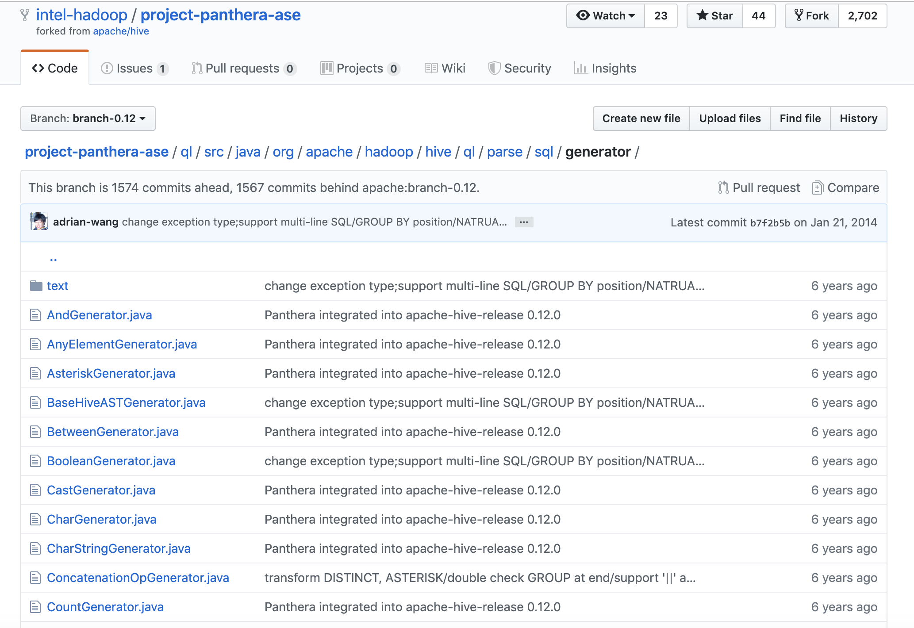

- 00 开篇词 掌握软件开发技术的第一性原理.md.html
- 01 程序运行原理：程序是如何运行又是如何崩溃的？.md.html
- 02 数据结构原理：Hash表的时间复杂度为什么是O(1)？.md.html
- 03 Java虚拟机原理：JVM为什么被称为机器（machine）？.md.html
- 04 网络编程原理：一个字符的互联网之旅.md.html
- 05 文件系统原理：如何用1分钟遍历一个100TB的文件？.md.html
- 06 数据库原理：为什么PrepareStatement性能更好更安全？.md.html
- 07 答疑 Java Web程序的运行时环境到底是怎样的？.md.html
- 07 编程语言原理：面向对象编程是编程的终极形态吗？.md.html
- 08 软件设计的方法论：软件为什么要建模？.md.html
- 09 软件设计实践：如何使用UML完成一个设计文档？.md.html
- 10 软件设计的目的：糟糕的程序员比优秀的程序员差在哪里？.md.html
- 11 软件设计的开闭原则：如何不修改代码却能实现需求变更？.md.html
- 12 软件设计的依赖倒置原则：如何不依赖代码却可以复用它的功能？.md.html
- 13 软件设计的里氏替换原则：正方形可以继承长方形吗？.md.html
- 14 软件设计的单一职责原则：为什么说一个类文件打开最好不要超过一屏？.md.html
- 15 软件设计的接口隔离原则：如何对类的调用者隐藏类的公有方法？.md.html
- 16 设计模式基础：不会灵活应用设计模式，你就没有掌握面向对象编程.md.html
- 17 设计模式应用：编程框架中的设计模式.md.html
- 18 反应式编程框架设计：如何使程序调用不阻塞等待，立即响应？.md.html
- 19 组件设计原则：组件的边界在哪里？.md.html
- 20 答疑 对于设计模式而言，场景到底有多重要？.md.html
- 20 领域驱动设计：35岁的程序员应该写什么样的代码？.md.html
- 21 分布式架构：如何应对高并发的用户请求.md.html
- 22 缓存架构：如何减少不必要的计算？.md.html
- 23 异步架构：如何避免互相依赖的系统间耦合？.md.html
- 24 负载均衡架构：如何用10行代码实现一个负载均衡服务？.md.html
- 25 数据存储架构：如何改善系统的数据存储能力？.md.html
- 26 搜索引擎架构：如何瞬间完成海量数据检索？.md.html
- 27 微服务架构：微服务究竟是灵丹还是毒药？.md.html
- 28 高性能架构：除了代码，你还可以在哪些地方优化性能？.md.html
- 29 高可用架构：我们为什么感觉不到淘宝应用升级时的停机？.md.html
- 30 安全性架构：为什么说用户密码泄漏是程序员的锅？.md.html
- 31 大数据架构：大数据技术架构的思想和原理是什么？.md.html
- 32 AI与物联网架构：从智能引擎到物联网平台.md.html
- 33 区块链技术架构：区块链到底能做什么？.md.html
- 33 答疑 互联网需要解决的技术问题是什么？.md.html
- 34 技术修炼之道：同样工作十几年，为什么有的人成为大厂架构师，有的人失业？.md.html
- 35 技术进阶之道：你和这个星球最顶级的程序员差几个等级？.md.html
- 36 技术落地之道：你真的知道自己要解决的问题是什么吗？.md.html
- 37 技术沟通之道：如何解决问题？.md.html
- 38 技术管理之道：你真的要转管理吗？.md.html
- 38 答疑 工作中的交往和沟通，都有哪些小技巧呢？.md.html
- 加餐 软件设计文档示例模板.md.html
- 结束语 期待未来的你，成为优秀的软件架构师.md.html
- 捐赠
14 软件设计的单一职责原则：为什么说一个类文件打开最好不要超过一屏？
我在Intel工作期间，曾经接手过一个大数据SQL引擎的开发工作（[如何自己开发一个大数据SQL引擎？]）。我接手的时候，这个项目已经完成了早期的技术验证和架构设计，能够处理较为简单的标准SQL语句。后续公司打算成立一个专门的小组，开发支持完整的标准SQL语法的大数据引擎，然后进一步将这个产品商业化。
我接手后打开项目一看，吓出一身冷汗，这个项目只有几个类组成，其中最大的一个类，负责SQL语法的处理，有近万行代码。代码中充斥着大量的switch/case，if/else代码，而且方法之间互相调用，各种全局变量传递。
只有输入测试SQL语句的时候，在debug状态下才能理解每一行代码的意思。而这样的代码有1万行，现在只实现了不到10%的SQL语法特性。如果将SQL的全部语法特性都实现了，那么这个类该有多么大！逻辑有多么复杂！维护有多么困难！而且还要准备一个团队来合作开发！想想看，几个人在这样一个大文件里提交代码，想想都酸爽。
这是当时这个SQL语法处理类中的一个方法，而这样的方法有上百个。
/**
* Digest all Not Op and merge into subq or normal filter semantics
* After this process there should not be any NOT FB in the FB tree.
*/
private void digestNotOp(FilterBlockBase fb, FBPrepContext ctx) {
// recursively digest the not op in a top down manner
if (fb.getType() == FilterBlockBase.Type.LOGIC_NOT) {
FilterBlockBase child = fb.getOnlyChild();
FilterBlockBase newOp = null;
switch (child.getType()) {
case LOGIC_AND:
case LOGIC_OR: {
// not (a and b) -> (not a) or (not b)
newOp = (child.getType() == Type.LOGIC_AND) ? new OpORFilterBlock()
: new OpANDFilterBlock();
FilterBlockBase lhsNot = new OpNOTFilterBlock();
FilterBlockBase rhsNot = new OpNOTFilterBlock();
lhsNot.setOnlyChild(child.getLeftChild());
rhsNot.setOnlyChild(child.getRightChild());
newOp.setLeftChild(lhsNot);
newOp.setRightChild(rhsNot);
break;
}
case LOGIC_NOT:
newOp = child.getOnlyChild();
break;
case SUBQ: {
switch (((SubQFilterBlock) child).getOpType()) {
case ALL: {
((SubQFilterBlock) child).setOpType(OPType.SOMEANY);
SqlASTNode op = ((SubQFilterBlock) child).getOp();
// Note: here we directly change the original SqlASTNode
revertRelationalOp(op);
break;
}
case SOMEANY: {
((SubQFilterBlock) child).setOpType(OPType.ALL);
SqlASTNode op = ((SubQFilterBlock) child).getOp();
// Note: here we directly change the original SqlASTNode
revertRelationalOp(op);
break;
}
case RELATIONAL: {
SqlASTNode op = ((SubQFilterBlock) child).getOp();
// Note: here we directly change the original SqlASTNode
revertRelationalOp(op);
break;
}
case EXISTS:
((SubQFilterBlock) child).setOpType(OPType.NOTEXISTS);
break;
case NOTEXISTS:
((SubQFilterBlock) child).setOpType(OPType.EXISTS);
break;
case IN:
((SubQFilterBlock) child).setOpType(OPType.NOTIN);
break;
case NOTIN:
((SubQFilterBlock) child).setOpType(OPType.IN);
break;
case ISNULL:
((SubQFilterBlock) child).setOpType(OPType.ISNOTNULL);
break;
case ISNOTNULL:
((SubQFilterBlock) child).setOpType(OPType.ISNULL);
break;
default:
// should not come here
assert (false);
}
newOp = child;
break;
}
case NORMAL:
// we know all normal filters are either UnCorrelated or
// correlated, don't have both case at present
NormalFilterBlock nf = (NormalFilterBlock) child;
assert (nf.getCorrelatedFilter() == null || nf.getUnCorrelatedFilter() == null);
CorrelatedFilter cf = nf.getCorrelatedFilter();
UnCorrelatedFilter ucf = nf.getUnCorrelatedFilter();
// It's not likely to result in chaining SqlASTNode
// as any chaining NOT FB has been collapsed from top down
if (cf != null) {
cf.setRawFilterExpr(
SqlXlateUtil.revertFilter(cf.getRawFilterExpr(), false));
}
if (ucf != null) {
ucf.setRawFilterExpr(
SqlXlateUtil.revertFilter(ucf.getRawFilterExpr(), false));
}
newOp = child;
break;
default:
}
fb.getParent().replaceChildTree(fb, newOp);
}
if (fb.hasLeftChild()) {
digestNotOp(fb.getLeftChild(), ctx);
}
if (fb.hasRightChild()) {
digestNotOp(fb.getRightChild(), ctx);
}
}
我当时就觉得，我太难了。
单一职责原则
软件设计有两个基本准则：低耦合和高内聚。我在前面讲到过的设计原则和后面将要讲的设计模式大多数都是关于如何进行低耦合设计的。而内聚性主要研究组成一个模块或者类的内部元素的功能相关性。
设计类的时候，我们应该把强相关的元素放在一个类里，而弱相关性的元素放在类的外边。保持类的高内聚性。具体设计时应该遵循这样一个设计原则：
一个类，应该只有一个引起它变化的原因。
这就是软件设计的单一职责原则。如果一个类承担的职责太多，就等于把这些职责都耦合在一起。这种耦合会导致类很脆弱：当变化发生的时候，会引起类不必要的修改，进而导致bug出现。
职责太多，还会导致类的代码太多。一个类太大，它就很难保证满足开闭原则，如果不得不打开类文件进行修改，大堆大堆的代码呈现在屏幕上，一不小心就会引出不必要的错误。
所以关于编程有这样一个最佳实践：一个类文件打开后，最好不要超过屏幕的一屏。这样做的好处是，一方面代码少，职责单一，可以更容易地进行复用和扩展，更符合开闭原则。另一方面，阅读简单，维护方便。
一个违反单一职责原则的例子
如何判断一个类的职责是否单一，就是看这个类是否只有一个引起它变化的原因。
我们看这样一个设计：

正方形类Rectangle有两个方法，一个是绘图方法draw()，一个是计算面积方法area()。有两个应用需要依赖这个Rectangle类，一个是几何计算应用，一个是图形界面应用。
绘图的时候，程序需要计算面积，但是计算面积的时候呢，程序又不需要绘图。而在计算机屏幕上绘图又是一件非常麻烦的事情，所以需要依赖一个专门的GUI组件包。
这样就会出现一个尴尬的情形：当我需要开发一个几何计算应用程序的时候，我需要依赖Rectangle类，而Rectangle类又依赖了GUI包，一个GUI包可能有几十M甚至数百M。本来几何计算程序作为一个纯科学计算程序，主要是一些数学计算代码，现在程序打包完，却不得不把一个不相关的GUI包也打包进来。本来程序包可能只有几百K，现在变成了几百M。
Rectangle类的设计就违反了单一职责原则。Rectangle承担了两个职责，一个是几何形状的计算，一个是在屏幕上绘制图形。也就是说，Rectangle类有两个引起它变化的原因，这种不必要的耦合不仅会导致科学计算应用程序庞大，而且当图形界面应用程序不得不修改Rectangle类的时候，还得重新编译几何计算应用程序。
比较好的设计是将这两个职责分离开来，将Rectangle类拆分成两个类：

将几何面积计算方法拆分到一个独立的类GeometricRectangle，这个类负责图形面积计算area()。Rectangle只保留单一绘图职责draw()，现在绘制长方形的时候可以使用计算面积的方法，而几何计算应用程序则不需要依赖一个不相关的绘图方法以及一大堆的GUI组件。
从Web应用架构演进看单一职责原则
事实上，Web应用技术的发展、演化过程，也是一个不断进行职责分离，实现单一职责原则的过程。在十几年前，互联网应用早期的时候，业务简单，技术落后，通常是一个类负责处理一个请求处理。
以Java为例，就是一个Servlet完成一个请求处理。
这种技术方案有一个比较大的问题是，请求处理以及响应的全部操作都在Servlet里，Servlet获取请求数据，进行逻辑处理，访问数据库，得到处理结果，根据处理结果构造返回的HTML。这些职责全部都在一个类里完成，特别是输出HTML，需要在Servlet中一行一行输出HTML字符串，类似这样：
response.getWriter().println("<html> <head> <title>servlet程序</title> </head>");
这就比较痛苦了，一个HMTL文件可能会很大，在代码中一点一点拼字符串，编程困难、维护困难，总之就是各种困难。
于是后来就有了JSP，如果说Servlet是在程序中输出HTML，那么JSP就是在HTML调用程序。使用JSP开发Web程序大概是这样的：
用户请求提交给JSP，而JSP会依赖业务模型进行逻辑处理，并将模型的处理结果包装在HTML里面，构造成一个动态页面返回给用户。
使用JSP技术比Servlet更容易开发一点，至少不用再痛苦地进行HTML字符串拼接了，通常基于JSP开发的Web程序在职责上也会进行了一些最基本的分离：构造页面的JSP和处理逻辑的业务模型分离。但是这种分离藕断丝连，JSP中依然存在大量的业务逻辑代码，代码和HTML标签耦合在一起，职责分离得并不彻底。
真正将视图和模型分离的是后来出现的各种MVC框架，MVC框架通过控制器将视图与模型彻底分离。视图中只包含HTML标签和模板引擎的占位符，业务模型则专门负责进行业务处理。正是这种分离，使得前后端开发成为两个不同的工种，前端工程师只做视图模板开发，后端工程师只做业务开发，彼此之间没有直接的依赖和耦合，各自独立开发、维护自己的代码。

有了MVC，就可以顺理成章地将复杂的业务模型进行分层了。通过分层方式，将业务模型分为业务层、服务层、数据持久层，使各层职责进一步分离，更符合单一职责原则。

小结
让我们回到文章的标题，类的职责应该是单一的，也就是引起类变化的原因应该只有一个，这样类的代码通常也是比较少的。在开发实践中，一个类文件在IDE打开，最好不要超过一屏。
文章开头那个大数据SQL引擎的例子中，SQL语法处理类的主要问题是，太多功能职责被放在一个类里了。我在研读了原型代码，并和开发原型的同事讨论后，把这个类的职责从两个维度进行切分。一个维度是处理过程，整个处理过程可以分为语法定义、语法变形和语法生成这三个环节，每个SQL语句都需要依赖这三个环节。此外，我在第一个模块的[第6篇文章]中讲到，每个SQL语句在处理的时候都要生成一个SQL语法树，而树是由很多节点组成的。从这个角度讲，每个语法树节点都应该由一个单一职责的类处理。
我从这两个维度将原来有着近万行代码的类进行职责拆分，拆分出几百个类，每个类的职责都比较单一，只负责一个语法树节点的一个处理过程。很多小的类只有几行代码，打开后只占IDE中一小部分，在显示器上一目了然，阅读、维护都很轻松。类之间没有耦合，而是在运行期，根据SQL语法树将将这些代表语法节点的类构造成一颗树，然后用设计模式中的组合模式进行遍历即可。
后续参与进来开发的同事，只需要针对还不支持的SQL语法功能点，开发相对应的语法转换器Transformer和语法树生成器Generator就可以了，不需要对原来的类再进行修改，甚至不需要调用原来的类。程序运行期，在语法处理的时候遇到对应的语法节点，交给相关的类处理就好了。
重构后虽然类的数量扩展了几百倍，但是代码总行数却少了很多，这是重构后的部分代码截图：

思考题
你在软件开发中有哪些可以用单一职责原则改进的设计呢？
欢迎你在评论区写下你的思考，也欢迎把这篇文章分享给你的朋友或者同事，一起交流一下。
© 2019 - 2023 Liangliang Lee. Powered by gin and hexo-theme-book.